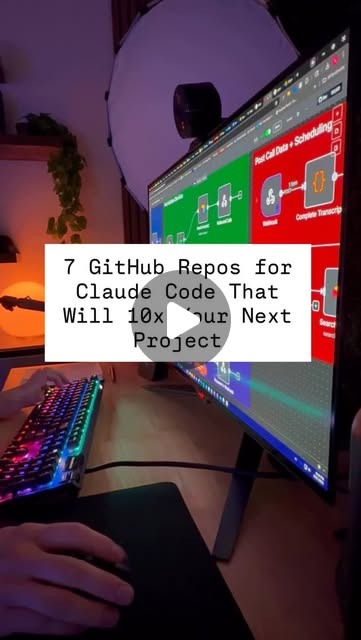
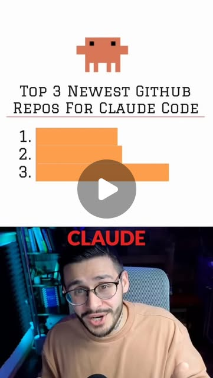

The Claude Code Power User's Toolkit: From Token Waste to Terminal Dominance
Try It — Action Sketch
Write a CLAUDE.md with project rules + persona → add primer.md for session state → install hooks for automation → set up parallel worktrees for multi-agent work → install the 7 key repos → configure memory system → measure token usage and optimize.
Connected Posts (6)



Prompt system — run this yourself
Pasteable into Claude Code, Claude, or any agent. One-shot for the whole result, step prompts when you want to steer. Every step carries its own audit; the gap audit makes the agent find and fill what it missed.
Mission. Configure Claude Code for one real project so it costs fewer tokens and finishes more work: a lean CLAUDE.md, primer.md, hooks, parallel worktrees, a vetted subset of the 7 repos, and output and token tooling (Caveman, codeburn). For a daily Claude Code user hitting limits. Done means: token use per completed task drops against a measured baseline on the same task set, every installed repo and hook has been read and justified, and parallel worktrees deliver more merged work per hour without conflicts.
1 · Deeper, not bigger
- What a top professional would do (that you didn't ask for): A senior engineer would measure before configuring: tokens per completed task, where the context goes (system, tools, MCP schemas, CLAUDE.md, history), and how often work is redone. They would treat plugins, skills and hooks as third-party code that runs with their permissions, read each one, and pin versions. They would install the minimum: every MCP server's tool schema costs context on every turn. They would set permission rules deliberately rather than blanket auto-approve. They would compare against a control: the same tasks on an unconfigured install.
- Rawest material to start from: 1) Claude Code docs: settings.json, permissions, hooks reference, memory and @imports, subagents, skills, plugins, MCP, /context and /cost. 2) Boris Cherny's original thread (3-5 worktrees, plan mode, CLAUDE.md updated after corrections, skills in git, Slack MCP for bug fixing, BigQuery skill, subagents, output styles). 3) Source of each repo: kepano/obsidian-skills, czlonkowski/n8n-mcp, nextlevelbuilder/ui-ux-pro-max-skill, thedotmack/claude-mem, glittercowboy/get-shit-done, hesreallyhim/awesome-claude-code, obra/superpowers - read install scripts, hooks and what runs in the background. 4) Caveman and codeburn repos (charlieautomates' 'reduce token usage by 75%' and 'shows where your tokens are going'). 5) Your own ~/.claude/projects transcripts for real token usage.
- Methods and tools: `npx codeburn` for per-task and per-tool token breakdowns; /context and /cost in session; a fixed 10-task benchmark from your backlog with pass checks; git worktrees with tmux or Ghostty panes; .claude/settings.json permissions allow and deny lists; hooks (PreToolUse guards, SessionStart state injection, Stop reminders); code review of every plugin's hooks and scripts; version pinning by commit hash; Caveman modes (lite, full, ultra) measured for output tokens and accuracy.
- What proves it right: codeburn reports before and after on the same 10 tasks; task pass checks (tests, linters, diffs) graded identically; merged PRs per hour with 1 vs 3 worktrees; a teammate or second reviewer confirms output quality did not drop under Caveman; a security read of each installed repo with findings logged.
Rewritten prompt — ask for exactly that:
You are a senior engineer tuning Claude Code for this repo. Measure first: run codeburn and /context on a fresh session and on 10 real tasks from my backlog, each with a pass check; record tokens per completed task and where context goes. Then configure in this order, re-measuring after each: (1) CLAUDE.md under 150 lines, rules only, details via @imports; (2) primer.md rewritten at session end plus a SessionStart hook printing branch, last 5 commits and git status; (3) settings.json permissions with explicit allow and deny lists instead of blanket auto-approve; (4) Caveman at lite and full, checking accuracy on the same tasks; (5) from the 7 repos (obsidian-skills, n8n-mcp, ui-ux-pro-max-skill, claude-mem, get-shit-done, awesome-claude-code, superpowers), install only ones my tasks need, after reading their hooks and scripts, pinned to a commit; (6) 3 git worktrees with one session each. Report a table of tokens per completed task and pass rate per configuration, every repo's security notes and keep/drop decision, and worktree throughput vs serial.
2 · One-shot prompt
ROLE: You are a senior engineer and Claude Code power user. Stance: configuration is code; measure it, review it, keep only what pays.
CONTEXT: Source posts: Boris Cherny's habits (via evolving.ai, keshavsuki): 3-5 git worktrees each with its own session, plan mode for every complex task and re-plan when drifting, 'update your CLAUDE.md so you don't make that mistake again' after every correction, daily tasks turned into skills or slash commands like /techdebt committed to git, Slack MCP for bug fixing, BigQuery skill for analytics, subagents, verify before done. keshavsuki: primer.md rewritten every session plus memory.sh injecting git state plus a commit-log git hook. chase.h.ai: 7 repos - kepano/obsidian-skills, czlonkowski/n8n-mcp ('deep knowledge of all 1,084 n8n nodes'), nextlevelbuilder/ui-ux-pro-max-skill, thedotmack/claude-mem, glittercowboy/get-shit-done, hesreallyhim/awesome-claude-code, obra/superpowers. charlieautomates: 'burning tokens for no reason is a skill issue' - Caveman cuts output tokens '75%', codeburn shows where tokens leak (skills, MCPs, bloated CLAUDE.md), Design Extract reverse-engineers sites. howard.mov: the harness matters more than the model.
HARD CONSTRAINTS: Measure baseline before any change. Read every plugin, skill and hook script before install; pin to a commit; log what each runs and when. No blanket auto-approve: write explicit allow and deny lists; destructive commands (rm -rf, git push --force, deploy scripts) stay on ask or deny. No secrets in CLAUDE.md, hooks output or logs. Back up ~/.claude and project .claude before changes. Work at project scope unless the human approves user scope.
DELIVERABLES:
1. BASELINE.md: codeburn summary, /context breakdown, 10-task benchmark with pass checks, tokens per completed task.
2. CLAUDE.md (under 150 lines) and primer.md with a session-end rewrite rule.
3. .claude/settings.json: permissions allow and deny, SessionStart hook (git state), PreToolUse guard for dangerous commands, Stop reminder for primer.
4. REPOS.md: for each of the 7 repos - what it installs (skills, MCP servers, hooks, background workers), context cost per session, security notes, needed for my tasks yes/no, decision, pinned commit.
5. CAVEMAN.md: output tokens and pass rate at off, lite, full.
6. WORKTREES.md: 3-worktree setup with aliases, rules, throughput vs serial.
7. skills/: at least 2 skills or slash commands for things done daily in this repo.
8. RESULTS.md: tokens per completed task and pass rate per configuration step.
BUILT-IN GAP ANALYSIS: Keep GAPS.md: config that did not reduce tokens, repos that added context cost without use, hooks that slowed sessions, accuracy lost to compression, permission rules that blocked real work. Fill what you can.
SELF-QUESTIONS: Which section of context is biggest, and did I attack that one first? How many tokens do MCP tool schemas cost per turn after installs? Did Caveman change correctness on any task? Does any installed hook make network calls or run a background service? Are my permission rules tighter or looser than before? Do worktrees conflict on shared files? Did I turn a daily task into a skill and measure it?
STOP CONDITIONS: Stop when RESULTS.md shows each configuration step's effect, REPOS.md covers all 7, and GAPS.md exists. Stop and ask before any user-scope change or installing anything that runs a background service.
RETURN FORMAT: RESULTS.md table (step, tokens per completed task, pass rate, delta), REPOS.md decisions, the permissions summary, worktree throughput, and GAPS.md.3 · Step-by-step prompts
Step 1 — Ground truth: baseline tokens and a task benchmark
Goal: Know where tokens go and how often tasks succeed before configuring.
Back up ~/.claude/settings.json and the project's .claude/ to a dated folder. Run `npx codeburn` for the last 2 weeks and record tokens by project, tool, skill and MCP. Open a fresh session and record /context: system, tools, MCP schemas, memory files, with token counts. Read the Claude Code docs for settings, permissions, hooks, memory imports, skills and plugins; note anything that changes context cost. Build a 10-task benchmark from your real backlog (bug fix, refactor, test writing, doc update, small feature) each with a pass check (test command, lint, or diff). Run all 10 on the current setup in fresh sessions. Record tokens in and out, turns, pass/fail. Write BASELINE.md with tokens per completed task as the headline number and prompts per task as the second.
Expect: A backup folder, BASELINE.md with codeburn summary, /context table, and a 10-row benchmark with tokens and pass/fail.
Audit before moving on: Each task's pass check must be automated or clearly defined; rerun 2 tasks to see run-to-run variance and record it. If variance is above 20%, plan 2 runs per task in later steps.
Step 2 — CLAUDE.md, primer.md and state hooks
Goal: A lean always-loaded layer plus fresh session state.
Rewrite CLAUDE.md to rules only, under 150 lines: plan mode for tasks over 3 steps, re-plan on drift, subagents for broad searches, verify with tests before done, update CLAUDE.md or lessons after corrections, git discipline (no push without asking, stage explicit paths). Move architecture notes and commands to docs/ and import only what every session needs with @path. Add primer.md (status, what changed, next up, blockers) with a rule to rewrite at session end. Add a SessionStart hook running a script that prints branch, `git log --oneline -5`, `git status --short | head -30` and primer.md age - never .env. Add a Stop hook that reminds to update primer.md if it is older than the last commit. Re-run the benchmark and record tokens and pass rate.
Expect: New CLAUDE.md, primer.md, hook scripts, settings.json hooks, benchmark row for this step.
Audit before moving on: Measure /context again: CLAUDE.md plus imports must be smaller than before. Time the hook (under 1 s). If pass rate dropped, find which removed rule mattered and restore it.
Step 3 — Permissions and guard hooks instead of blanket auto-approve
Goal: Fewer interruptions without giving away control.
From the baseline transcripts, list every permission prompt you approved and every command run. Write .claude/settings.json permissions: allow read-only and routine commands seen often (test runner, linters, git status, git diff, git log, ls, grep); ask for writes outside the repo, package installs, network calls; deny rm -rf on broad paths, git push --force, deploy scripts, and reading .env or key files. Add a PreToolUse hook that blocks commands matching dangerous patterns even if a rule slips (e.g. `find ... -exec rm` on repo root, `git checkout --orphan`). Test each deny with a harmless dry attempt. Count prompts per task on the benchmark before and after. The shellonback point - 'control is reading the plan, not pressing Y' - is the goal: fewer prompts, plan reviewed in plan mode.
Expect: A permissions block, a guard hook with tests, prompts-per-task before and after.
Audit before moving on: Try each denied pattern once; all must be blocked. Confirm no routine benchmark step now needs a prompt it did not before.
Step 4 — Vet and install only the repos you need
Goal: Add capability without hidden cost or risk.
For each of kepano/obsidian-skills, czlonkowski/n8n-mcp, nextlevelbuilder/ui-ux-pro-max-skill, thedotmack/claude-mem, glittercowboy/get-shit-done, hesreallyhim/awesome-claude-code, obra/superpowers: clone, read the README, install script, hooks, MCP server code and any background worker. Record in REPOS.md: what it installs, which events its hooks fire on, network access, files written, background processes, context cost per session (measure with /context after install in a scratch project), license, last commit. Decide keep or drop based on whether your 10 tasks or daily work need it. awesome-claude-code is a list, not an install - use it to find alternatives. Install kept ones pinned to a commit hash at project scope. Re-run the benchmark. For claude-mem specifically, document where it stores observations, whether it runs a worker process, and how to purge it. For n8n-mcp, check whether the '1,084 nodes' knowledge loads as tool schemas every turn or on demand.
Expect: REPOS.md with 7 entries and decisions, pinned installs, benchmark row.
Audit before moving on: After install, check `ps` for unexpected background processes and confirm hooks fire only on documented events. If tokens per completed task rose without a pass-rate gain, uninstall and record why.
Step 5 — Output compression and token telemetry
Goal: Test the Caveman '75%' claim and keep codeburn as a gauge.
Install Caveman per its repo after reading its hooks. Run the 10-task benchmark three times: off, lite, full. Record output tokens, total tokens, turns and pass rate. Check correctness beyond the pass check on 3 tasks by reading the explanations: did compression drop a warning or a caveat that mattered? Compute the real reduction in total tokens (output is only part of usage; input and cache dominate many sessions). Write CAVEMAN.md with the numbers and a chosen default. Set up codeburn as a weekly check: a command or skill that runs it and appends the summary to docs/token-log.md. Also turn one daily repo task (e.g. a /techdebt scan or a release checklist) into a committed skill and measure its tokens vs doing it ad hoc.
Expect: CAVEMAN.md with a 3-arm table, docs/token-log.md started, at least 1 new skill with before/after tokens.
Audit before moving on: If any arm loses pass rate, the default is the highest-compression arm with no loss. State output vs total token reduction separately.
Step 6 — Parallel worktrees
Goal: More merged work per hour without collisions.
Create 3 worktrees: `git worktree add ../<repo>-a -b wt/a` (and b, c). Add shell aliases to jump between them and open each in a tmux pane or Ghostty tab with its own Claude Code session. Write WORKTREES.md rules: each session owns listed directories; shared files (CLAUDE.md, lockfiles, migrations) change only on main; primer per worktree. Pick 6 benchmark-like tasks touching separate areas. Run them serially in one session, then as 3 parallel sessions with 2 tasks each. Record wall time, total tokens, merge conflicts and test results after merge. Count your own attention cost too: how many times you switched panes to answer a prompt or review a plan, since parallel sessions shift work to the reviewer. Stage commits by explicit path in each worktree, never with a blanket add. Remove finished worktrees with `git worktree remove` afterwards.
Expect: 3 worktrees, WORKTREES.md, a serial vs parallel table.
Audit before moving on: Merge all branches and run the full test suite; any failure caused by parallel edits is logged with its cause and a rule added.
Step 7 — Validate against oracles and write the gap report
Goal: Prove the configuration paid off and list what did not.
Re-run the full 10-task benchmark on the final configuration in fresh sessions. Build RESULTS.md: rows for baseline, CLAUDE.md+hooks, permissions, repos, Caveman, final - tokens per completed task, pass rate, prompts per task. Run codeburn for the period and compare to BASELINE.md. Ask a second reviewer (a teammate or a separate model instance with only the diffs and tests) to rate output quality on 5 tasks baseline vs final, blind. Write GAPS.md: steps with no gain, repos dropped and why, security findings, hooks that slowed sessions, accuracy lost. Rank and fix the top two. Add a monthly check rule: codeburn, /context, benchmark of 3 tasks. Write a rollback script that restores the step 1 backup in one command and test it once.
Expect: RESULTS.md, codeburn comparison, blind review result, GAPS.md with two fixes.
Audit before moving on: Every claimed saving cites both numbers. Unrun oracles are FAIL-UNRUN. If pass rate fell, the configuration is not done.
4 · Gap analysis and audit
You did not configure this setup. Audit it. Open a fresh session and record /context; compare to the final row in RESULTS.md. Enumerate every claim: tokens per completed task per step, pass rates, prompts per task, Caveman reductions, worktree speedup, repo context costs. Mark each VERIFIED (re-measured within run-to-run variance), UNVERIFIED (why), or FALSE (show both). Re-run 3 benchmark tasks on the final config. Read every hook script and installed plugin's hooks: list commands they run, network calls, and files they write; flag anything undocumented in REPOS.md. Try each denied command pattern and confirm it is blocked. Check `ps` for background processes from plugins. Grep CLAUDE.md, primer.md, hook outputs and logs for secrets. Confirm installed repos are pinned to commits. List missing pieces (no update policy for pinned repos, no alert when CLAUDE.md grows, no rollback script, no worktree cleanup), rank by risk and token cost, fix the top three now, and report what you could not fix and why.
Questions the agent must ask itself before it says done:
- What is my tokens per completed task now vs baseline, on the same 10 tasks?
- Which context section was largest at baseline, and did I cut that one?
- How many tokens do MCP tool schemas add per turn after installs?
- Did I read every hook and install script of the 7 repos, and which ones run background processes?
- Is Caveman's reduction measured on output tokens or total tokens, and did pass rate hold?
- Are my permission rules tighter or looser than before, and is any destructive command on allow?
- Did I turn at least one daily task into a committed skill and measure it?
- Do parallel worktrees produce merge conflicts on shared files?
- Does the SessionStart hook ever print anything sensitive?
- Are the installed repos pinned, and how will I update them safely?
- Would a teammate get the same benefit from this config in their checkout?
- Which configuration step gave no measurable gain and should be removed?
5 · What proves it right
- codeburn before and after over comparable workloads, plus the 10-task benchmark tokens per completed task.
- Automated pass checks (tests, lint, diffs) on the same 10 tasks at each configuration step.
- Blind quality review of 5 baseline vs final outputs by a teammate or an isolated model instance.
- Denied-command tests: every pattern in the deny list and guard hook blocked on attempt.
- Serial vs 3-worktree run of 6 tasks: wall time, conflicts and full test suite green after merge.
6 · Failure modes
- Plugin sprawl. Tell: /context shows thousands of tokens of tool schemas unused. Fix: install only what tasks need; measure per repo.
- Unreviewed hooks. Tell: unknown background processes or network calls. Fix: read and pin every repo; log hook events.
- Blanket auto-approve. Tell: destructive command ran without a prompt. Fix: explicit deny list plus a PreToolUse guard.
- Compression costs accuracy. Tell: missing caveats, more retries. Fix: measure pass rate per Caveman mode; pick the highest mode with no loss.
- CLAUDE.md creep. Tell: file grows every correction. Fix: rules only, monthly prune, details via @imports.
- Worktree collisions. Tell: conflicts in lockfiles or migrations. Fix: ownership rules in WORKTREES.md.
- Savings claimed on output only. Tell: '75% fewer tokens' but total barely moves. Fix: report total tokens per completed task.
7 · Agent direction (unattended runs)
Back up configs before touching anything. Start with codeburn and /context; cache the baseline. Work at project scope; ask before user-scope changes. Spawn one sub-agent per repo for the read-only vetting in step 4 (they share no files), and review their findings yourself before any install. Run benchmarks in fresh sessions only. Never install a plugin that starts a background service without the human's OK. Never put secrets in hooks or memory files. Stop and ask before: user-scope settings, background services, removing existing user hooks. Cache codeburn outputs per step in docs/. If a configuration step lowers pass rate, revert it before starting the next. Return RESULTS.md, REPOS.md, CAVEMAN.md, WORKTREES.md and GAPS.md, plus a one-line headline: tokens per completed task baseline vs final and pass rate.
Prompt system updated 2026-10-22 · all prompt systems · JSON